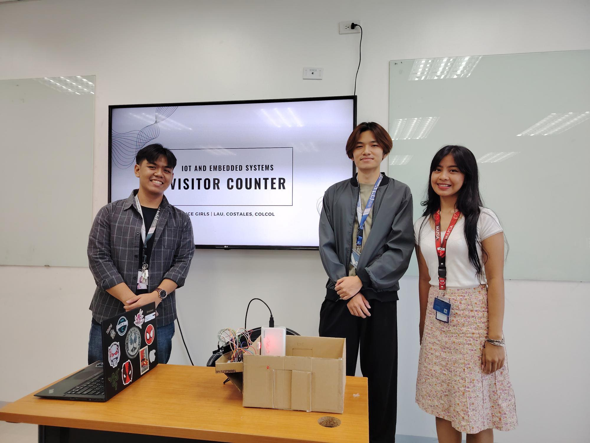
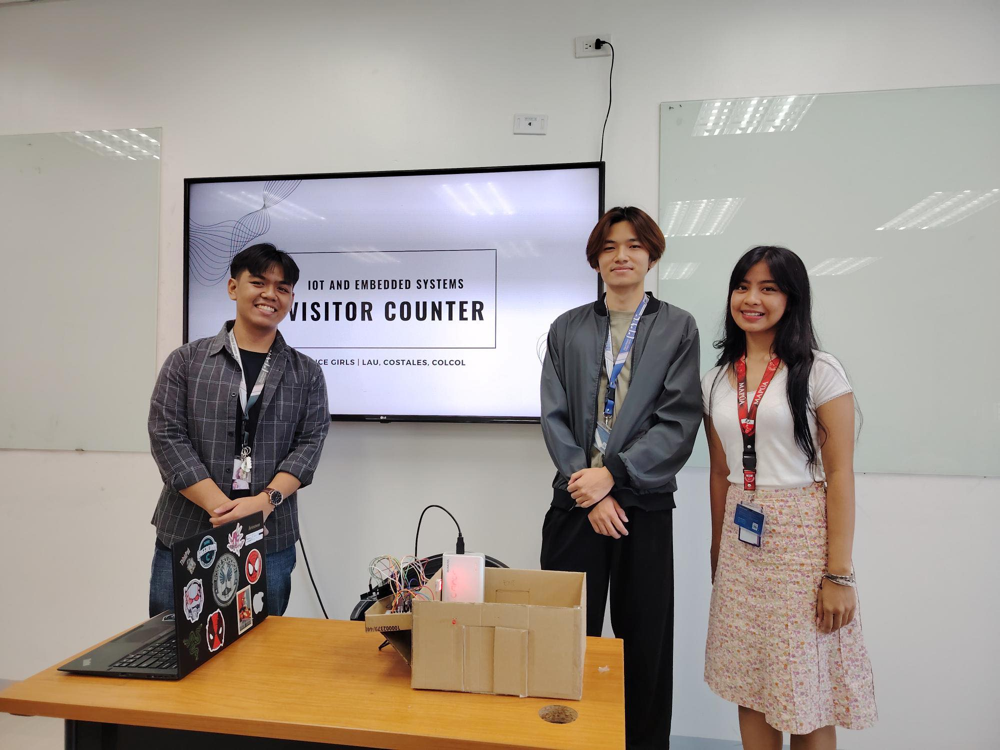

Year 3 Project
IoT Visitor Tracking System
For my Year 3 project at Mapúa Malayan Colleges Laguna, I developed an IoT-based visitor tracking system with my group to monitor the number of people entering a closed room, such as a hotel lobby or restaurant. The system used infrared (IR) sensors interfaced with an Arduino microcontroller to detect entries at designated entry points, providing real-time occupancy data to enhance space management and safety in high-traffic indoor environments.
I implemented the system using Arduino and WEMOS to process IR sensor data, with sensors positioned at entry points to count visitors accurately. The visitor count was displayed on a web dashboard built with HTML, CSS, and JavaScript, allowing users to monitor real-time entries and view historical data. Key challenges included ensuring reliable IR sensor detection under varying lighting conditions and integrating the Arduino data and Wemos with the web dashboard. This project strengthened my skills in IoT development, sensor integration, and front-end web development, building a foundation for my 4th Year Capstone Project..
View GitHub Repository

 
